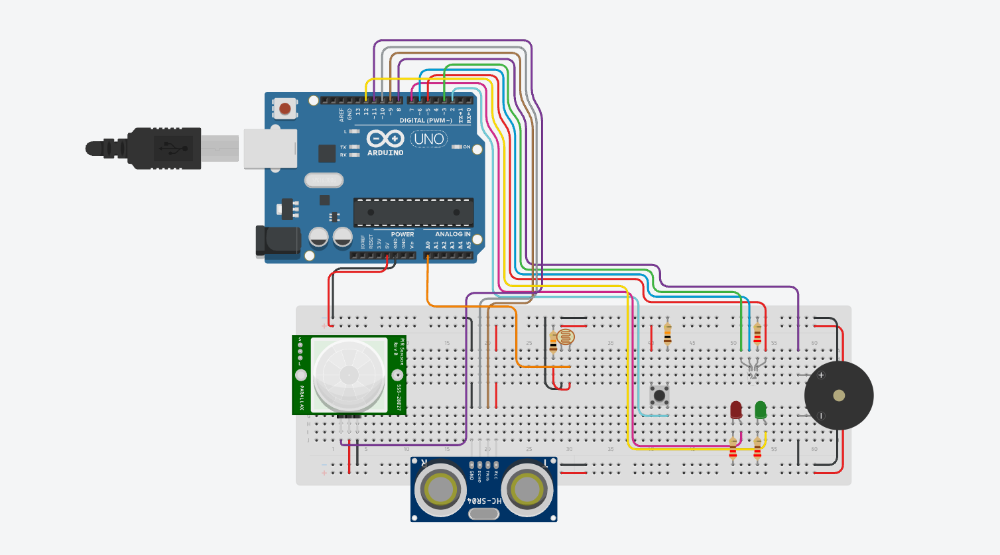

[Rol en el equipo]
[Nombre Apellido]
[Rol técnico o responsabilidad dentro del proyecto]
SafeLine Petapa es un proyecto de tecnología que propone un sistema automatizado para monitorear y controlar el aforo en las atracciones del parque IRTRA Petapa, desarrollado como parte de una simulación de clase donde el estudiante actúa como una empresa de electrónica contratada por el parque. El sistema utiliza una placa Arduino Uno R3 junto con un sensor ultrasónico HC-SR04 y un sensor infrarrojo PIR para contar y detectar el paso de visitantes, una fotorresistencia LDR que ajusta el funcionamiento según la luz ambiental, y un LED RGB junto con un zumbador que alertan visual y sonoramente cuando una zona se acerca o alcanza su límite seguro de personas, buscando así prevenir aglomeraciones y reforzar la seguridad dentro del parque.
Las atracciones de IRTRA Petapa pueden llegar a superar su capacidad segura de visitantes en horarios de alta afluencia, generando aglomeraciones que dificultan una evacuación rápida en caso de emergencia y aumentan el riesgo de accidentes.
El sistema cuenta automáticamente el ingreso y salida de personas mediante sensores, comparando ese conteo contra un límite seguro programado. Cuando se acerca o supera ese límite, el sistema emite una alerta visual (LED RGB) y sonora (buzzer) para que el personal del parque actúe a tiempo.

El sensor HC-SR04 mide la distancia y detecta el paso de personas por un punto de acceso, mientras el sensor PIR refuerza esa detección captando movimiento por radiación infrarroja. La fotorresistencia LDR ajusta el brillo del LED según la luz ambiental. El código en C++ compara el conteo contra el límite de aforo: si está en rango seguro el LED se enciende en verde, si se acerca cambia a amarillo, y si lo supera cambia a rojo y activa el buzzer.
Informe completo de la consultoría — 5 temas principales y 18+ subtemas alineados con el IRTRA Petapa, con hojas de colchón, tablas y esquemas en orientación horizontal, y referencias en Normas APA generadas nativamente en Microsoft Word. Disponible en formato .docx y .pdf en el repositorio del proyecto.
docs/ de este repositorio y actualiza los enlaces de arriba.
Resumen visual del proyecto para las autoridades del IRTRA Petapa: nombre creativo de la solución, avatares del equipo generados con IA, resumen, ODS impactado y estado del sistema.

assets/img/infografia.svg por tu infografía final (PNG, JPG o PDF exportado como imagen).
Explicación en audio de la lógica del sistema y su impacto en el IRTRA Petapa. Duración máxima: 5 minutos.
¿Lo subieron a YouTube en oculto? Reemplacen este reproductor por un
<iframe> de YouTube, o dejen un enlace directo aquí:
[enlace al podcast]
[Rol técnico o responsabilidad dentro del proyecto]
[Rol técnico o responsabilidad dentro del proyecto]
[Rol técnico o responsabilidad dentro del proyecto]
assets/img/avatar-1.svg, avatar-2.svg y avatar-3.svg por los avatares generados con IA (Reto de Prompt Engineering: eviten el acabado "genérico de IA").